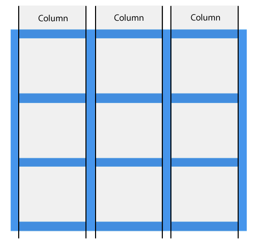
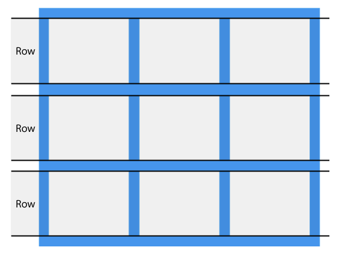
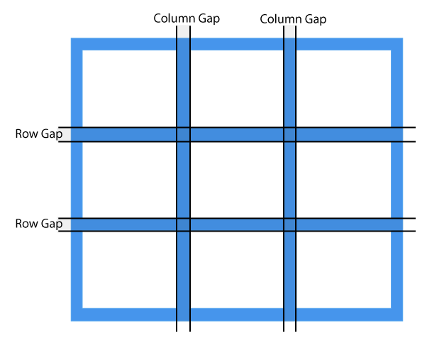
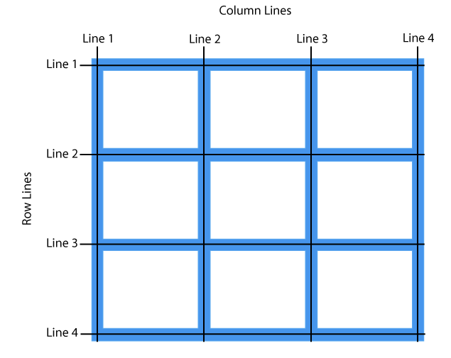

01그리드 레이아웃_grid p.423
그리드(grid)속성은 플렉스(flex)속성과는 다르게 두 방향(가로, 세로)으로 레이아웃을 만들기 위한 시스템이다.
웹페이지 레이아웃 방법
- table
- float:left, right
- display:inline;
- display:inline-block;
- display:block;
- display:table;
- display:flex(1차원, 가로축, 세로축)
- display:grid(2차원, 가로/세로축)
- 다단 레이아웃
1. GRID Columns(열)

2. GRID Row(행)

3. GRID gap(여백)

4. GRID Line(기준선)

5. GRID Container(부모 속성)
Grid Layout아웃에서 부모역할을 하기 위한 html태그요소이며 display:grid, display:inline-grid속성 값을 지정할 수 있다.
부모요소의 이름을 보통 'container', 자식요소의 이름을 'item'이라고 하며, 그리드는 column, row 아이템으로 구성된다.
6. GRID 속성
- display
- grid-template-columns
- grid-template-row
- grid-template-area
- grid-gap, grid-columns-gap, grid-row-gap
- justify-items, align-items, place-items
- justify-content, align-content, place-content
- grid-auto-columns, grid-auto-rows
- grid-auto-flow
- grid
css학습 참고 사이트 - https://www.w3schools.com/css/css_grid
7. GRID item속성
grid레이아웃에서 부모요소의 자식요소들을 아이템이라고 하며, 아이템들을 병합하고자 할 때, 열, 행 번호, 영역의 이름을 따로 지정하여 설정할 수 있다.
- grid-column : item의 열 시작위치 번호와 끝번호를 지정하여 병합하고자 할 때 사용. 예) 1/5
- grid-row : item의 행 시작위치 번호와 끝번호를 지정하여 병합하고자 할 때 사용. 예) 1/4
- grid-column, grid-row속성은 각각 grid-column-start, grid-column-end, grid-row-start, grid-row-end속성으로도 사용가능하다.
- grid-column-start, grid-column-end
- grid-row-start, grid-row-end
- grid-column, grid-row
- grid-area
- justify-self, align-self, place-self
그리드 레이아웃 기본 개념 잡기
item1
item2
item3
item4
item5
item6
item7
item8
item9
그리드 레이아웃 자식요소 병합하기
item1
item2
item3
item4
item5
item6
item7
실습예제 - 그리드 갤러리
이미지 갤러리